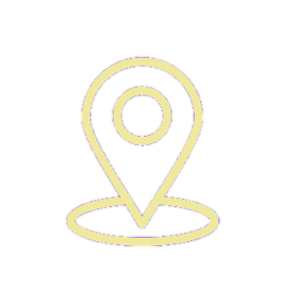
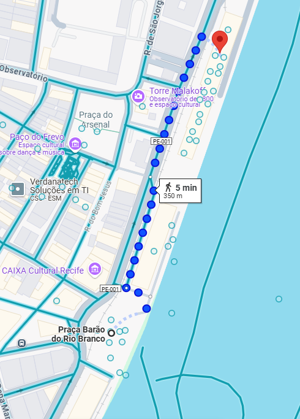
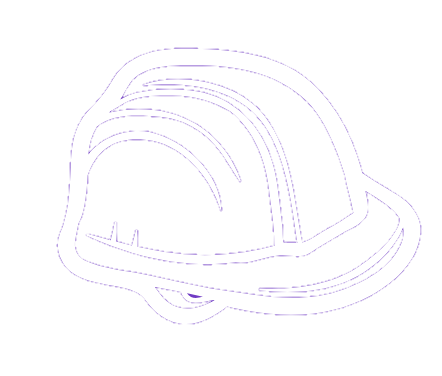

Construção de um Artefato tecnológico
Objetivo é criar um artefato capaz de chamar a atenção do público em locais inusitados como shopping, feiras, mercados, ruas, parque ou qualquer outro espaço. O desafio é ainda maior: o artefato deve ser especialmente atrativo para crianças e adolescentes, despertando sua curiosidade e interesse pelas engenharias.

AdmirArte
A obra de arte mais especial e autêntica do mundo, você só encontra aqui!

O que é o SelfWare Mirror?
Por que “SelfWare”?
O nome Selfware vem da junção de “Self”(eu, si mesmo) e “Software”(programação), simbolizando a ideia de que cada pessoa pode atualizar sua própria mentalidade e evoluir continuamente.
Como o SelfWare Mirror funciona?
O espelho com sensores ultrassonicos que detectam a aproximação do usuário e ativam automaticamente os leds. Cartazes espalhados pela cidade sendo o principal meio de atração ao espelho.
Impacto do Selfware mirror
Representa mais do que o um espelho interativo, sendo uma revolução na forma como nos enxergamos, trazendo tecnologia para o centro da discussão sobre autoimagem e confiança.

Conexão com a engenharia da computação